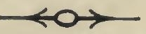

Kashmir Series of Texts and Studies.
No. XXIII
THE
TANTRALOKA
OF
ABHINAVA GUPTA
With Commentary by
RĀJĀNAKA JAYARATHA
Edited with notes by
MAHAMAHOPADHYAYA PANDIT MUKUND RĀM SHĀSTRĪ,
Officer-in-Charge, Research Department,
JAMMU AND KASHMIR STATE,
SRINAGAR.
__________
Published under the authority of the Government of
His Highness Lieut.-General Maharaja
SIR PRATAP SINGH SAHIB BAHADUR,
G.C.S.I., G.C.I.E., K.G.C.B.E., LL.D.,
Maharaja of Jammu and Kashmir State.
___________
VOLUME I
____________

Allababad:
PRINTED AT THE INDIAN PRESS.
1918.